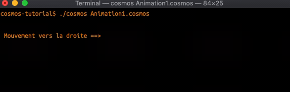
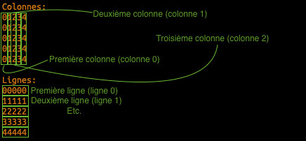
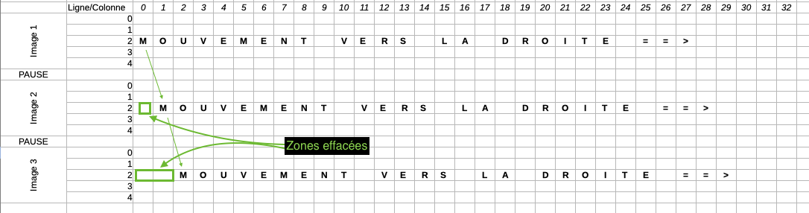
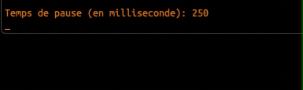
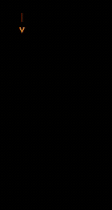

Une animation est une suite d'image qui défile à un certain rythme...
Il suffit donc de montrer une information à l'écran, puis de la changer et ainsi de suite pour créer
une animation...
Objectifs
- Voir la console comme un écran à 2 dimensions (x=colonne, y=ligne)
- Créer une animation
- Créer l'illusion de contrôler un vaisseau avec le clavier
Le cerveau humain croit à une animation à une fréquence de
Horizontal

Pour réaliser cette animation, il faut imaginer que la console ressemble à un quadrillage avec des coordonnées:

Ainsi, l'animation correspond à faire bouger le texte sur la grille:

Placer le curseur sur la grille
Pour placer le curseur à un endroit spécifique (avant d'écrire), on utilise les instructions suivantes:
Placer le curseur à la colonne 5.
Placer le curseur à la ligne 1.
Si le numéro dépend d'une valeur stockée en mémoire, alors ça donne
//Créer une zone mémoire nommée #colonne avec la valeur 1.
Placer le curseur à la colonne #colonne.
Animation
À présent, nous sommes en mesure d'écrire une première version de l'animation horizontale qui est une répétition de l'élément suivant:
Placer le curseur à la colonne 1.
Afficher "==>".
Attendre 200ms.
Et voici le code:

Une fois la correction faite, voici le résultat:

Simplification du code
Le code actuel ressemble un peu à du copier/coller et cela est très ennuyeux lorsqu'on doit faire des modifications (d'ailleurs c'est ce qui coûte cher en développement logiciel)...
Pour écrire du code durable, on a donc tout intérêt à opérer les modifications suivantes.
Stocker le symbole qui avance en mémoire
Comme pour le délai, on va utiliser une zone mémoire pour y enregistrer et référencer le symbole qui avance et on va même en profiter pour proposer à l'utilisateur de le choisir:

Répéter des instructions
Peut-être as-tu remarqué que le code est très similaire et c'est un signe qu'on peut l'optimiser en utiliser une notion de répétition. D'ailleurs cette notion est la base de la force de l'informatique qui est capable de répéter des opérations de manière très rapide...
Pour cela on utilise le mot clé Répéter :

Désormais, en changeant juste le nombre de répétitions, on peut choisir la durée de l'animation !
Cacher les décors
Sur les vidéos présentées, le curseur (partie clignotante avant le texte à écrire) a été masqué.
Pour faire cela, il suffit d'ajouter la commande suivante:
Masquer le curseur.
//Pour le réactiver: Afficher le curseur.
Dans la peau d'un réalisateur
Sauras-tu adapter le programme pour que l'utilisateur se prenne pour un réalisateur et puisse choisir le nombre de répétitions ?
Défi vertical
En s'inspirant de ce qui a été fait précédemment, il est temps de réaliser le programme suivant:

clear
Cet atelier était riche en découvertes, surtout quand on débute en programmation.
Voici donc un quizz récapitulatif: